Forecast con SMO per SVM con kernel polinomiale in Weka
Questo post mostra un uso in Weka del regressore SMOreg (Sequential Minimal Optimization) che è un efficiente algoritmo di machine learning per SVM (Macchine a Vettori di Supporto) per implementare approssimatori;
SMOreg puè essere utilizzato anche per realizzare predizioni (forecast) su serie storiche (time series); il kernel utilizzato è semplice e precisamente è il PolyKernel (Kernel Polonomiale) e il grado del polinomio sarà 1.
L'obiettivo è di dimostrare che il forecast del machine learning può raggiungere interessanti livelli di accuratezza con tempi di learning estremamente brevi.
Anche se le reti neurali di tipo LSTM (Long Short Term Memory) sono considerate le tipologie di reti neurali più adatte per il forecast,
un classico algoritmo supervisionato di forecast di machine learning, come quello presentato qui, può arrivare a livelli di accuratezza accettabili
e con un costo computazionale decisamente più basso rispetto a quello di una rete LSTM.
Nel mondo reale i dataset preesistono alla fase di apprendimento, infatti questi vengono ottenuti estraendo dati da database di produzione o file Excel, dall'output di strumenti di misura, dai data-logger collegati a sensori elettronici e così via,
e quindi adoperati per le fasi di learning successive;
ma poiché qui il focus è il forecast in sé e non la predizione di un fenomeno reale, i dataset utilizzati in questo post sono stati generati sinteticamente a partire da funzioni matematiche:
questo ha il vantaggio di poter stressare l'algoritmo e vedere per quali tipologie di dataset l'algoritmo ha accuratezza accettabile e per quali invece l'algoritmo fatica.
Sequenza completa di passi
Lanciare il programma Weka dell'Università di Waikato (Nuova Zelanda);
in questo post la versione di Weka utilizzata è la 3.8.3, ma quanto detto funziona anche con versioni precedenti; Weka richiede che il runtime di Java sia correttamente installato.
Una volta lanciato il programma Weka, compare la seguente finestra:
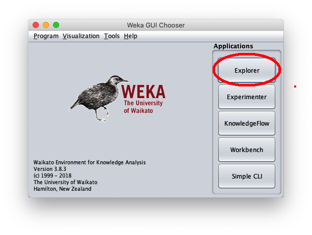
si prema il bottone Explorer evidenziato in rosso.Quando la finestra Weka Explorer viene visualizzata:
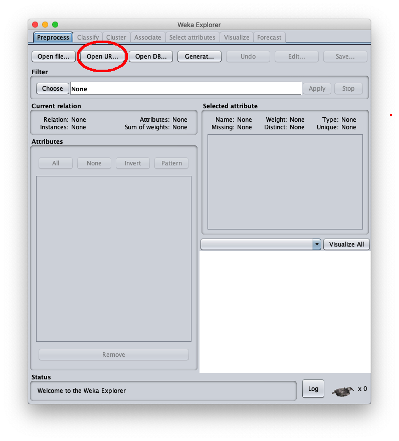
si prema il bottone Open Url..., evidenziato in rosso, per caricare il dataset in formato .arff
e in questa finestra:
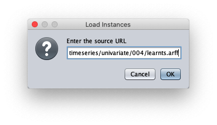
incollare l'url del dataset 004/learnts.arff e premere Ok.Il dataset sintetico caricato è generato con la formula $y=\frac{t}{50} + \sin \frac{t}{10}$ con $t \in I\!N, 0 \leq t < 200$;
la finestra Weka explorer (posizionata sul tab Preprocess si presenta così:
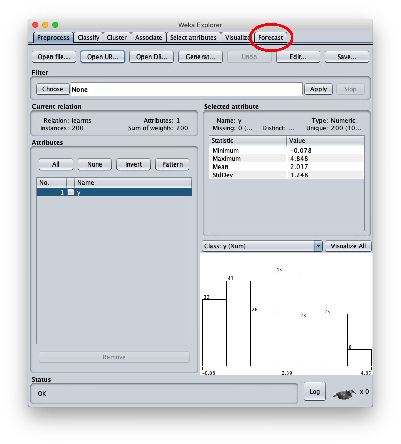
Ai fini degli obiettivi di questo post possiamo ignorare questo tab, si apra quindi il tab Forecast come evidenziato in rosso
e l'interfaccia utente appare così:
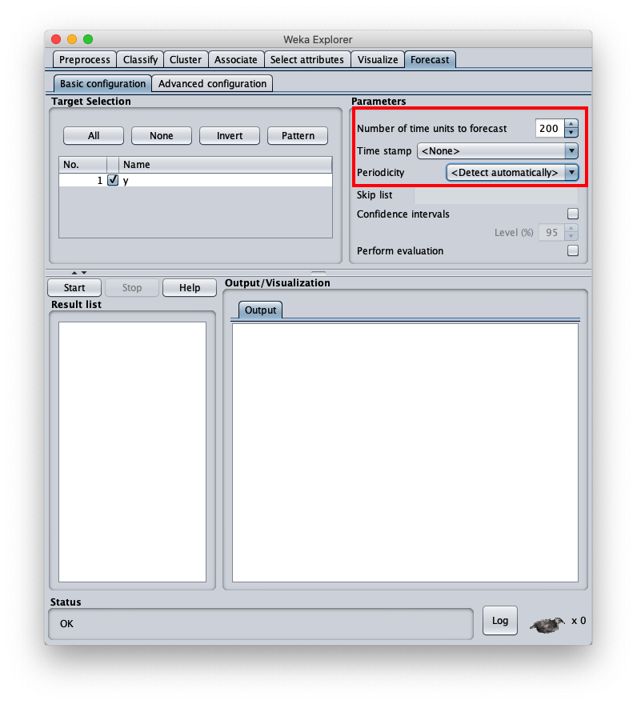
e cambiare Number of time units to forecast a 200 (il numero di predizioni da calcolare),
Time stamp a None (poiché la serie temporale scelta non ha un campo esplicito per il tempo)
e Periodicity a Detect automatically (anche se sarebbe nota).Per scegliere l'algoritmo di forecast in oggetto si vada nel tab Advanced configuration
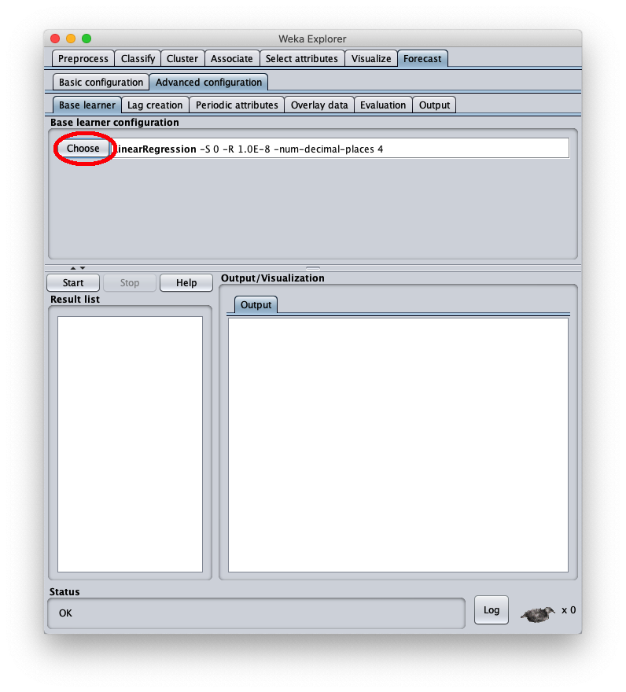
e si prema il bottome Choose e questa popup viene mostrata a video:
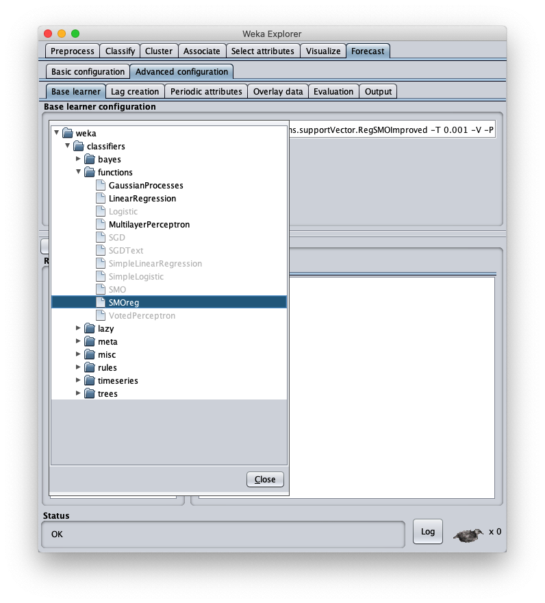
e si scelga la voce SMOreg sotto la categoria functions; l'interfaccia utente si presenta così:
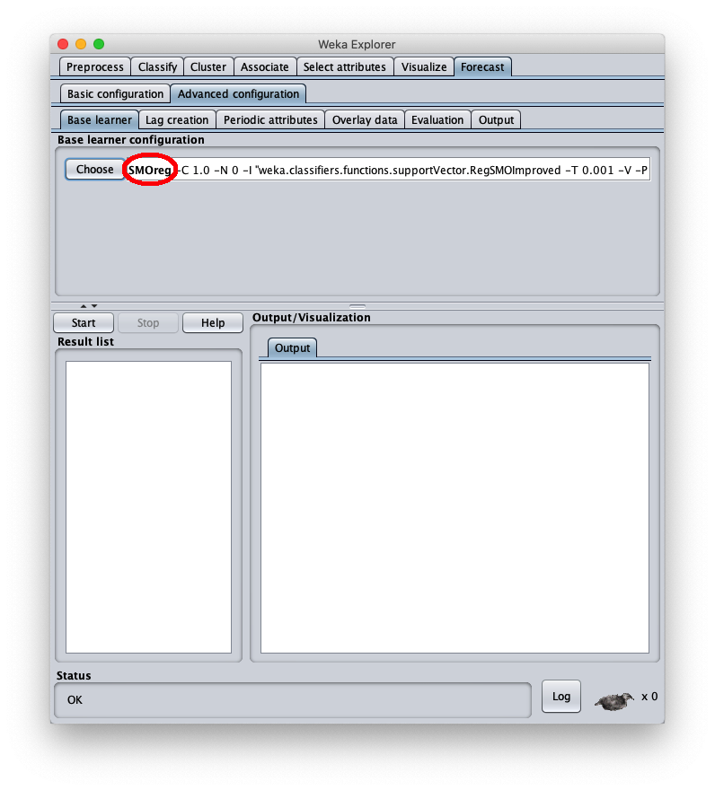
Si prema quindi sulla label SMOreg al fine di configurare i parametri dell'algoritmo Sequential Minimal Optimization (abbreviato SMO):

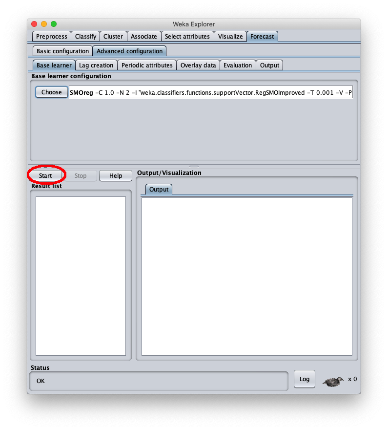
Si prema il bottone Start per effettuare il forecast; dopo qualche secondo di elaborazione la parte destra della finestra,
nel tab Train future pred., Weka mostra il grafico della sequenza temporale del dataset (le ascisse da 0 a 200) e la predizione (ascisse oltre 200):
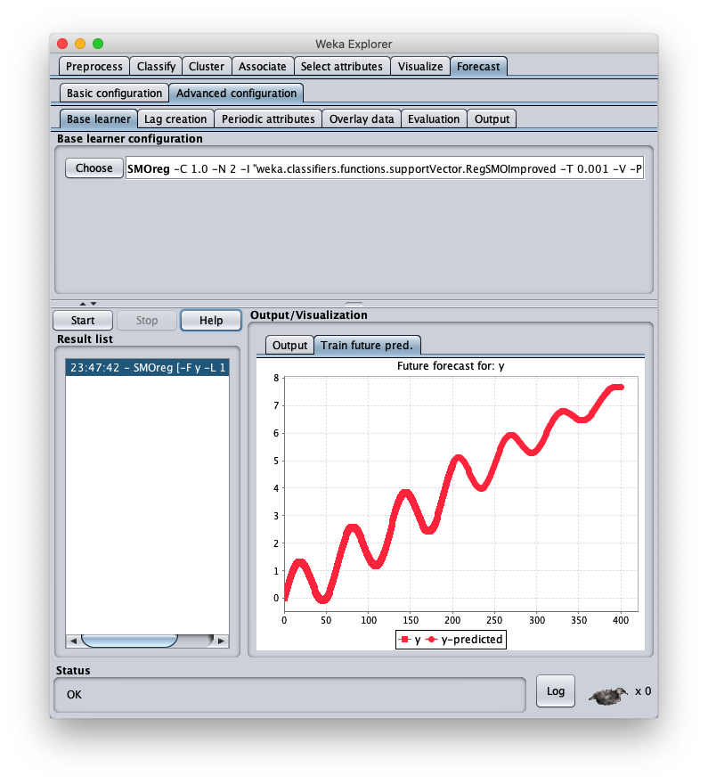
Si osservi che l'apprendimento del trend è giusto e anche la periodicità sembra giusta, ma tende a schiacciare l'ampiezza con il crescere delle ascisse.Per correggere questo aspetto aprire nuovamente la configurazione parametri dell'algoritmo SMOReg:
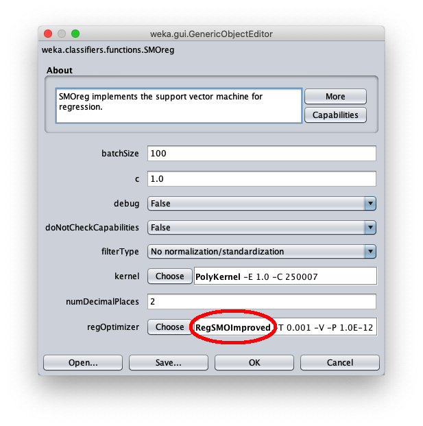
a clickare sulla label RegSMOImproved come evidenziato in rosso; la seguente popup è mostrata:
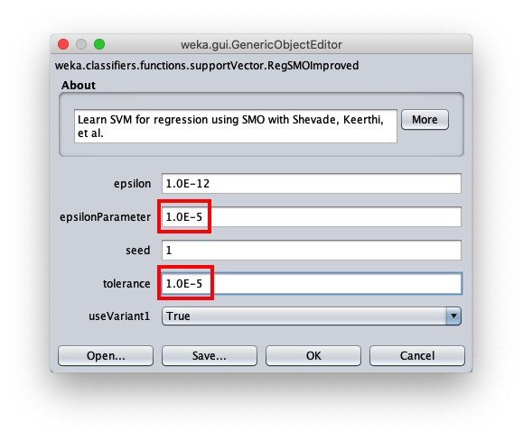
impostare a 1.0E-5 i parametri epsilonParameter e Tolerance. Ritornare su Weka Explorer chiudendo le due popup aperte con il bottone OK
e premere nuovamente su Start per calcolare un nuovo forecast.
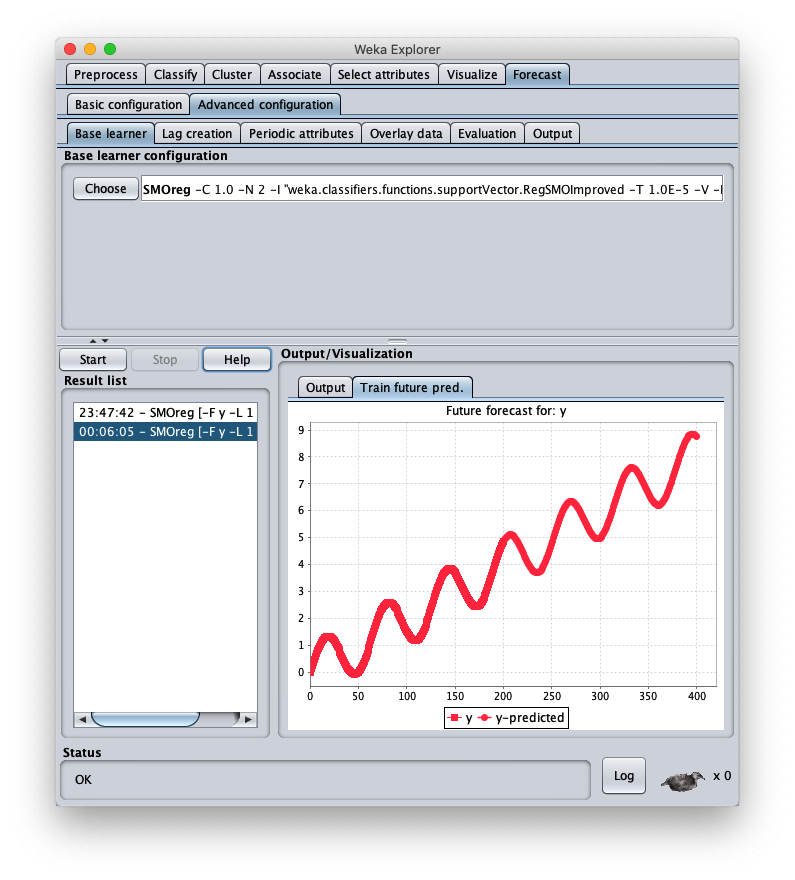
Come il grafico mostra chiaramente, il forecast ottenuto ha la stessa forma periodica e lo stesso trend della serie temporale iniziale.